Windows - How to use VLC
How To Use VLC with Windows/ documentation version 2.0
How to install & open VLC on Windows #back to top
VLC already installed? - Skip the installation steps.
Installation for Windows
- Step 1 - Open a browser and visit videolan.org.
- Step 2 - Click on .
- Step 3 - Click on vlc-2.2.X-win32.exe down in the left corner of your browser.
- Step 4 - A box will appear that says "Do you want to allow this program to make changes on this device?" Click yes.
- Step 5 - Another box appears, select what language you prefer and click "OK".
- Step 6 - Click next until you get an option "install", then click "install".
- Step 7 - At the end of the installation, you are presented with the image below. Make sure to check the checkbox "Run VLC media player" and click "finish".
{kind=link}
{kind=link}


Playing a video file#back to top
Step 0 - Download a video with no subtitles - examplevideo.mp4.
Step 1 - On the VLC toolbar click on "Media", then select “Open file…”.
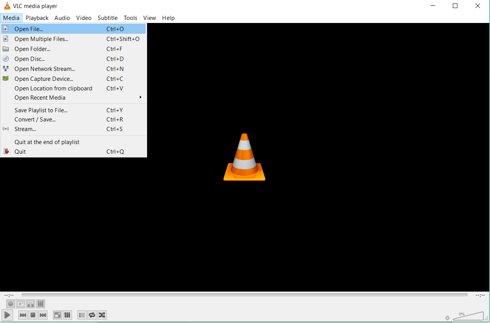{kind=link}
Step 2 - A directory window will open, navigate to the directory of your video file.
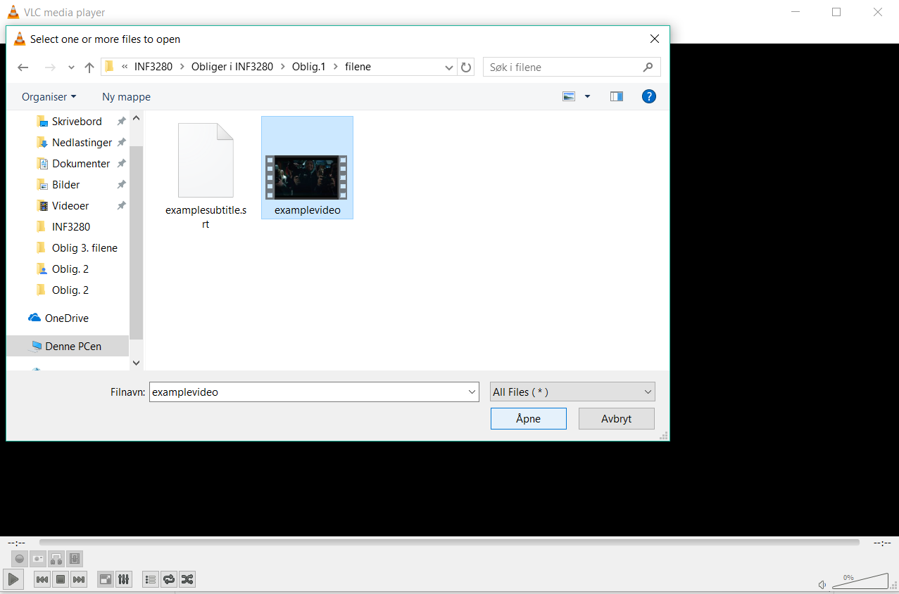{kind=link}
Step 3 - Click the video file you want to view, and click "Open" or [ENTER] on the keyboard.
Adding subtitles to video file#back to top
Step 0 - Download a subtitle file for your video - examplesubtitle.srt.
Step 1 - Click the dropdown-menu [Subtitles] in the toolbar, select “Add subtitle file…”.
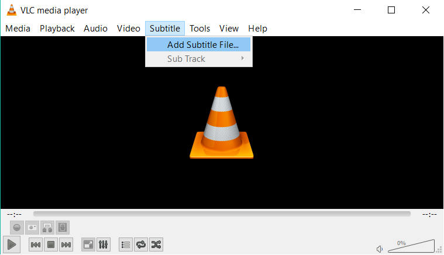{kind=link}
Step 2 - The directory where your current Vide file is located will pop up, navigate to where your subtitle file is, choose it and press “Open”.
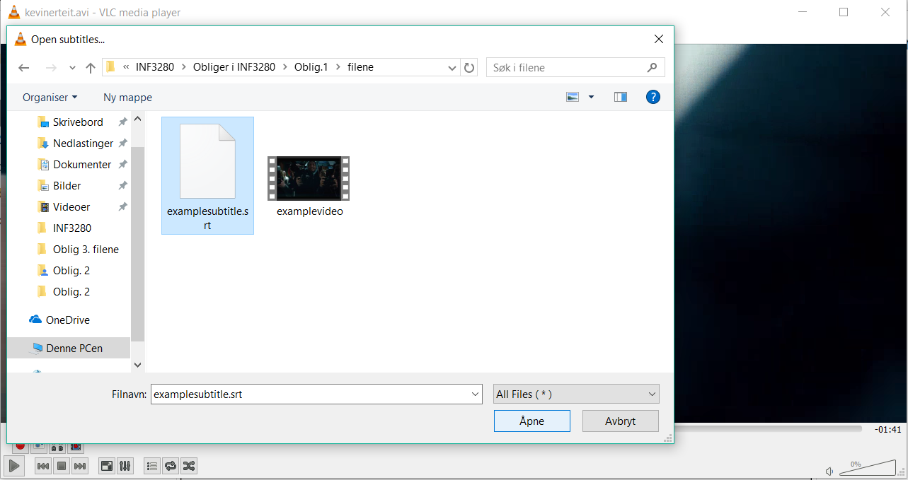{kind=link}
Step 3 -The video will start playing with the Subtitles. If the subtitles and the video are not in sync then you will need to adjust the subtitle by delaying it or playing it ahead.
Step 4 - Click the dropdown-menu [Tools] in the toolbar, select "Track Synchronization".
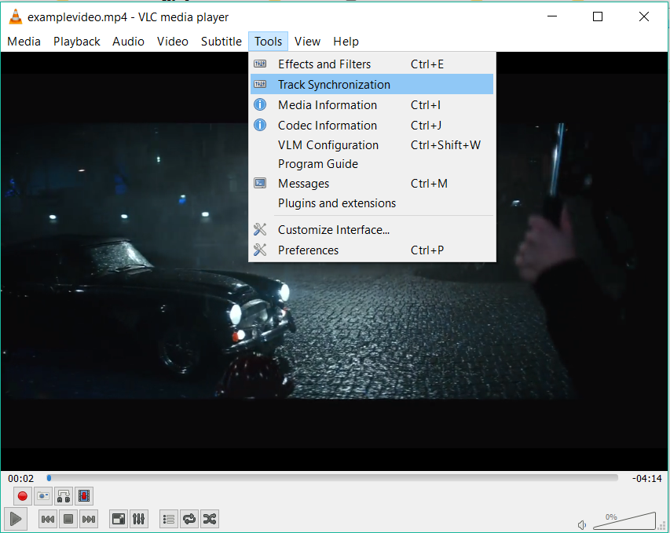{kind=link}
Step 5 - A small window will appear, change the values of “Subtitle track synchronization”. If the subtitle is delayed then enter the number of seconds it is delayed in negative. In this case it is delayed by 2 seconds so enter “-2” and press Enter on your keyboard as it will apply the changes.
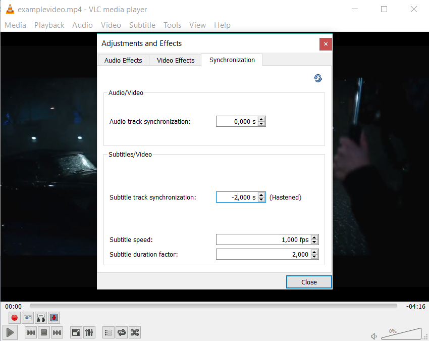{kind=link}
Recording a video file#back to top
Step 0 - Download this example video file to do this task: examplevideo.mp4.
Step 1 - Start off by add the recording bar, follow the picture below.
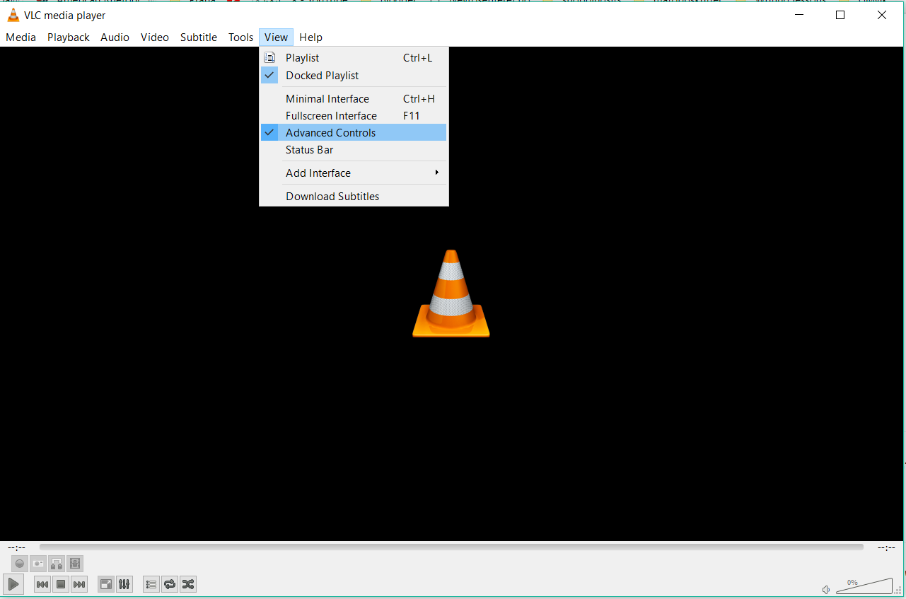{kind=link}
Step 2 - Record part of the video.
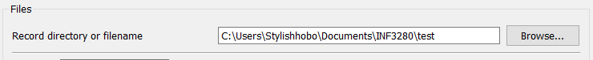{kind=link}
Converting a video file#back to top
Step 0 - Use the file you recorded from above to do this task.
Step 1 - Go the the “Media”, and click on the “Convert / Save...”.
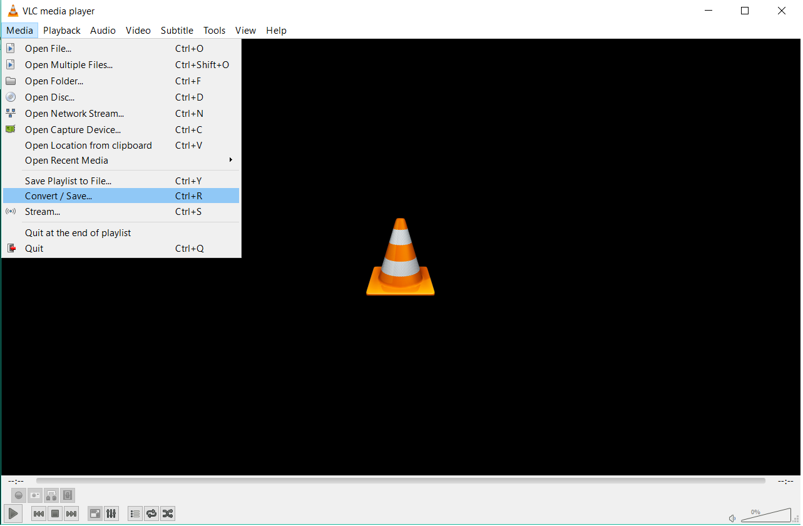{kind=link}
Step 2 - Add the file you want to convert, in this case it’s the file from above & Click “Convert / Save”.
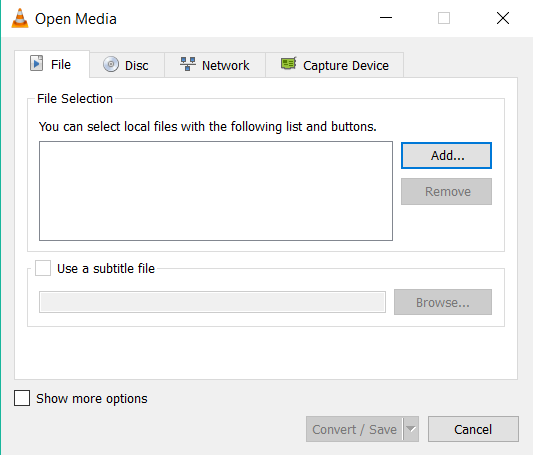{kind=link}
Step 3 - Choose the destination for the new file.
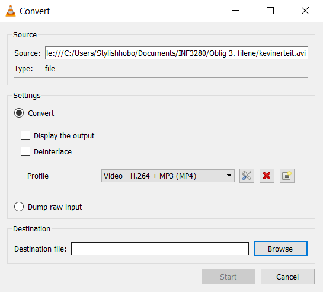{kind=link}
Note: Look up the specific keybinds for your Operating System if interested. They are described in the VLC settings [CTRL] + [P].
The keybinds described below is for Windows and Linux.
VLC keybinds
- Toggle VLC toolbars: [CTRL] + [H]
- Properties and settings: [CTRL] + [P]
Playback keybinds
- Playlists and library: [CTRL] + [L]
- Browse local files: [CTRL] + [O]
- Play / pause video: [SPACE]
- Volume control: [CTRL] + [ARROW UP / DOWN]
Playback options#back to top
The feature "Always on top" enables the VLC player to never be hidden behind other windows. This feature is brilliant if you need to watch something while working.
In the VLC toolbar, click the dropdown-menu "Video", select "Always on top" (MacOS: "Float on top").